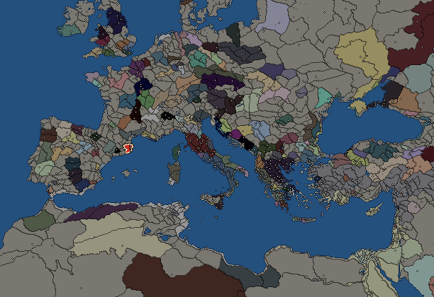
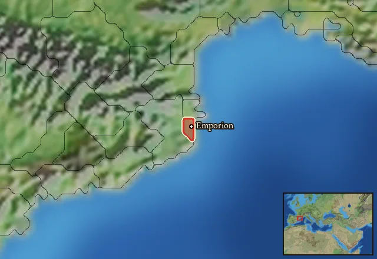

RTR: Imperium Surrectum
RTR: Imperium SurrectumEmporion


- difficulty Very Difficult
- Greek culture
- believes
 Ionian
Ionian - 3 settlements
- capital Emporion
- 11,100 manpower
- 4 characters
- 12 faction units
- 434 regional units
The campaign brief
Emporion means trade, and as such, our great city is dedicated to commerce. Goods from every part of the known world travel through our ports. From precious metals such as gold and silver, which can be found aplenty in Iberia, to wheat and grapes from Sicily and the Greek poleis of Italy, everything can be found in our ports or on our markets! Our great polis, which consists of two interconnected parts – Palaiopolis on the mainland, and Neapolis on an island, linked by a bridge and well-protected by strong walls – is a thriving city. Many Greeks come here to find a better life, and many Iberians live peacefully among us, loving trade and wealth as much as we do. After all, we are peaceful people ourselves, and we seek to get the most out of anyone who values prosperity.
However, as good-willed as we are, we know that the world is not a place where everything is given for free. We have to compete with mighty Carthage for control of the trade routes. Although we have tried to deal with them in peace, we have never dared attempt to check their expansion... Now, we realise that the threat is real. They have expanded to many islands south of us, and colonised the entire African coastline. We have respected their holdings, but their recent expansion in Iberia is becoming too large to be ignored. We, the Greeks of Emporion, need to be prepared for everything! As Carthage becomes more powerful, there is nothing that holds them back from attacking us.
If we were to face the Carthaginians now, that would be most challenging, and we need to secure allies. Our Phokaian brothers in Massalia should assist us, as they too worry about Carthage, as much as we do. We should also seek allies in Sicily, as these people are our trading partners and fellow Greeks who are equally tired of Punic expansionist ambitions. They once caused Carthage to suffer great defeats in Sicily, which made them turn their attention to Africa and Iberia. Now, it is our task to make them turn their attention elsewhere! It may be wise to ask Rome to assist us, even if we do not seek to replace Carthage's influence with theirs...
We should also colonise the trade post of Hemeroskopeion and seek to control the fishing routes in that region. This town could further expand our influence in Iberia. It is better to fight Carthage there, if they do seek to fight us first, than to disturb trade in our main commercial hubs. When we force Carthage to respect our position as a major trading power in the area, we can also claim what is ours, since we believe that Carthage holds too much power. Greeks expanded in the East, but few have dared to expand further to the West. We believe that it is our right to establish our own emporiai on the islands Carthage pretends to control! If our claims are not respected, then we will resort to force. Many islands are close to Emporion and can secure our valuable trade links with the Greeks of Sicily. Other than that, we could always expand beyond the Pillars of Herakles and discover the lands of legends... We could search for the legendary islands of Aiolos or Hyperborea, and according to some Ionians, even Atlantis may have existed and be found out there!
These lands, and much more, can be discovered when we follow in the footsteps of the great explorer Pytheas. By finding new lands with untapped resources, we can accumulate unimaginable wealth. Our great city should not only be noticed but also admired by everyone, as we thrive through trade and exploration! Therefore, we must put a halt to Carthage's expansion and its lurid dreams of monopoly. We should not be afraid of them, nor let them limit us to a secondary role. Let us not forget that curiosity is the strongest quality of all, as it motivates people to explore, improve, and understand. Through understanding, we gain knowledge, and through knowledge, we gain power. With power, we have the right to rule, and rule we will through commerce. Let us liberate the Pillars of Herakles from Carthage, allowing all traders to cross them undisturbed!
Starting settlements
Emporion begins with 3 settlements and 11,100 manpower.
| Settlement | Region | Size | Manpower | Already built | Settlement | Region | Size | Manpower | Already built |
|---|---|---|---|---|---|---|---|---|---|
| Emporion (capital) | Emporitia | large town | 5,200 | 12 buildings | Rhode | Rhodetia | town | 3,000 | 5 buildings |
| Oppidum Indicetum | Indicetia | town | 2,900 | 7 buildings |
What is already built in each settlement
Emporion, in Emporitia: Governor's Villa, Wooden Palisade, Homeland, Cisterns (Sanitation), Region Information Scroll, Local Market, Marsh Drainage Channels (Crops), Basic Armoury, Trade Port, Shrine, Weavery (Urban), Grape Orchards (Rural)
Rhode, in Rhodetia: Governor's House, Dependency, Region Information Scroll, Local Barter, Trade Port
Oppidum Indicetum, in Indicetia: Governor's House, Dependency, Region Information Scroll, Local Barter, Trade Port, Lumber Camp (Rural), Irrigation Ditches (Crops)
Starting diplomacy
Allied with (1):  Massalia
Massalia
Trade agreements with (1):  Massalia
Massalia
At peace with every other faction.
Like every faction, it is also at war with the  Free Peoples, who hold every settlement no faction does.
Free Peoples, who hold every settlement no faction does.
Homeland
Emporion's homeland is 1 region. Only there can it install the Homeland government (more on homelands).

Starting characters
| Name | Role | Age | Name | Role | Age | Name | Role | Age | Name | Role | Age |
|---|---|---|---|---|---|---|---|---|---|---|---|
| Pythagoras | General | 38 | Agathokles | General | 20 | Basigerrhos | General | 34 | Kyprios | Admiral | 20 |
Reforms
For every faction: Military innovations have arrived!, Second wave of military innovations have arrived!.
Units you can recruit
The same as in the main campaign.